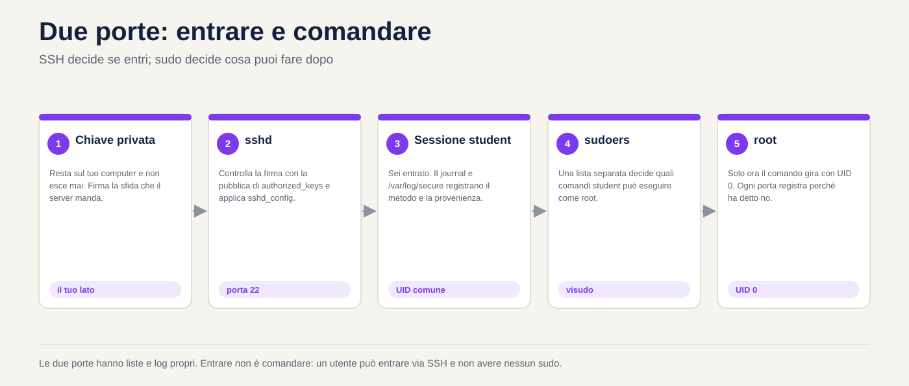
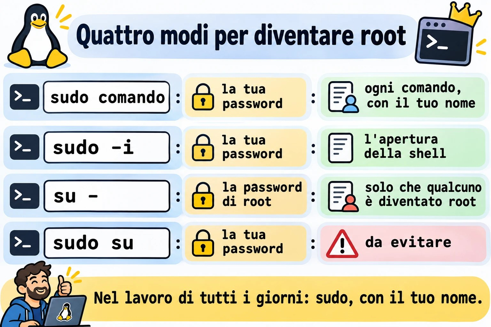
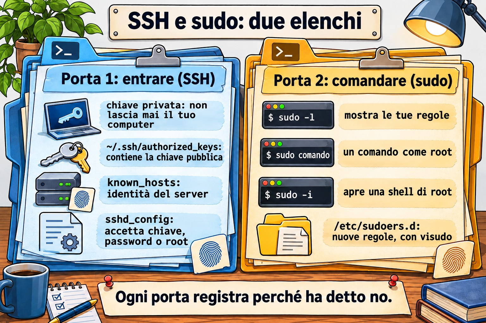
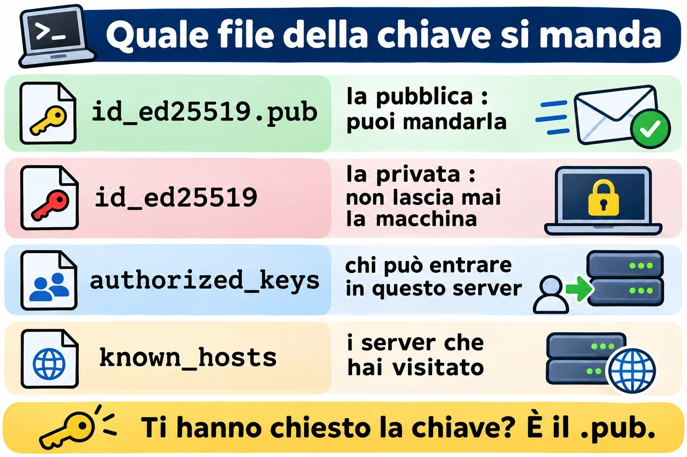
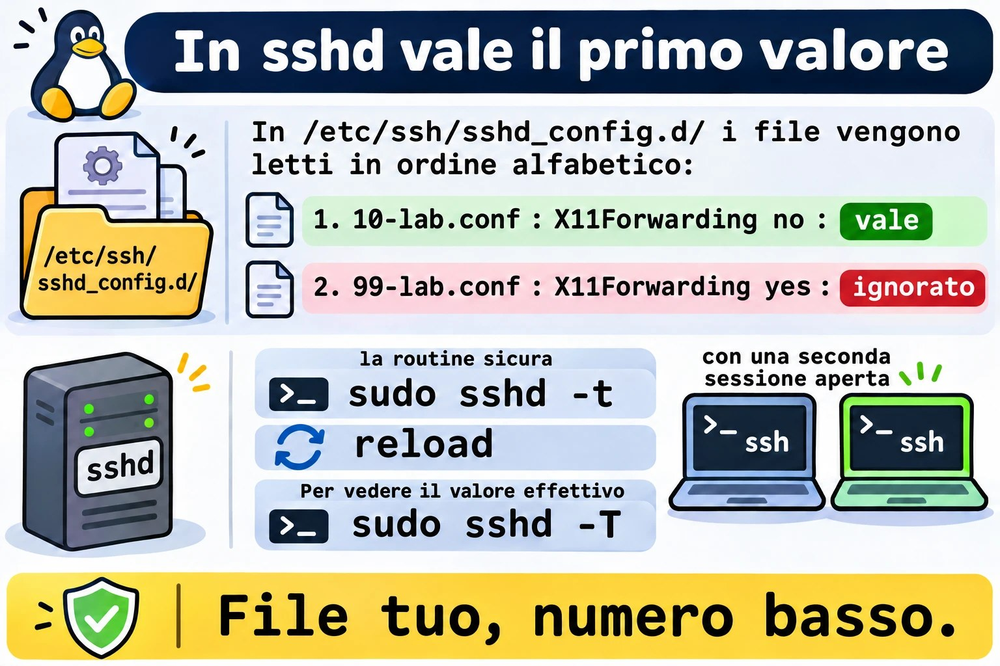
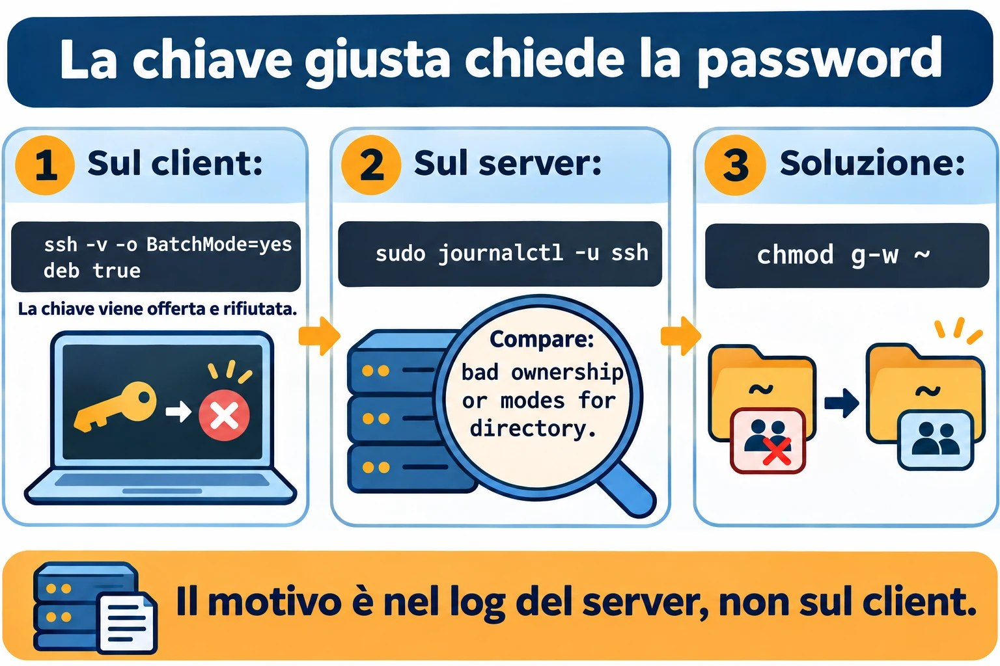

Lezione 2.5 · Accesso remoto e privilegi
Quinta lezione del Modulo 2. Quasi ogni lavoro su un server comincia con due cose: entrarci e ottenere il potere di modificarlo. Entrambe sembrano semplici finché non falliscono. La chiave che "ha sempre funzionato" comincia a chiedere la password perché qualcuno ha dato chmod alla cartella sbagliata. La regola di sudo creata ieri non vale perché il file ha un punto nel nome. Compare l'avviso che l'identità del server è cambiata, e il tecnico lo cancella senza pensarci. Oggi impari come SSH decide se ti lascia entrare, come sudo decide cosa puoi fare, e dove ciascuno lascia scritto il motivo quando dice no. Alla fine entri da una VM nell'altra senza password, con un alias breve, e sai leggere il log quando smette di funzionare.
| Scheda | Lezione 2.5 |
|---|---|
| Modulo | M2 · Sistema, utenti e permessi, lezione 5 di 8 |
| Quando | Settimana 5 |
| Alla fine sei in grado di | Dire che tipo di account è ogni utente dall'UID e dalla shell; usare sudo, sudo -i e su - sapendo cosa cambia ciascuno; leggere e creare regole in /etc/sudoers.d con visudo; verificare l'identità di un server alla prima connessione; creare una chiave SSH, installarla su un altro server e entrare senza password; usare ~/.ssh/config per gli alias; copiare file con scp e rsync; cambiare la configurazione di sshd con un file dedicato, testare prima di applicare e controllare il valore che vale; trovare nel log perché un login o un sudo è stato rifiutato |
| Prerequisiti | Lezione 2.4 (la scala di rete; le righe rocky-lab e debian-lab in /etc/hosts); Lezione 2.3 (journalctl -u); Lezione 1.4 (permessi letti con ls -l) |
| Durata | Circa 2h30 |
| Snapshot | m2a5-inicio e m2a5-fim su entrambe le VM |
1 · Riscaldamento
Tre domande, a mente. Scrivi le risposte; le soluzioni le trovi alla fine.
- Entri in un server con una chiave SSH da mesi. Oggi chiede la password. Scommetti: il problema è sul tuo computer o sul server?
- In Windows, un amministratore clicca su "Esegui come amministratore". Scommetti: in Linux,
sudoapre una sessione di root o esegue come root un solo comando? - La prima volta che entri in un server via SSH, ti chiede
Are you sure you want to continue connecting (yes/no)?. Scommetti: cosa protegge questa domanda?
2 · Perché conta
La password via SSH è il primo bersaglio di qualsiasi server esposto. Basta guardare il log di un server con la porta 22 aperta su internet: migliaia di tentativi al giorno, con root, admin, test, oracle. La chiave SSH risolve il problema, ma solo per chi capisce cosa sta facendo. La chiave privata copiata sul server sbagliato, l'authorized_keys con le chiavi di chi ha lasciato l'azienda tre anni fa e la cartella .ssh con permessi aperti sono rilievi comuni in qualsiasi audit.
Con sudo è lo stesso. Una buona regola dice chi può fare cosa, e il log mostra chi l'ha fatto. Una cattiva regola dà ALL a tutti, oppure è modificata senza visudo e smette di valere senza avviso. E l'abitudine di entrare direttamente come root cancella le tracce: nel log compare "root ha fatto", e nessuno sa quale dei cinque tecnici fosse.
Il terzo punto è l'avviso di identità. Quando SSH dice che la chiave del server è cambiata, può essere solo una reinstallazione. Può anche essere un'altra macchina che risponde al suo posto. Chi cancella l'avviso senza verificare si allena a ignorare l'unico allarme che SSH possiede.
3 · Modello mentale
Entrare e comandare sono due porte diverse. SSH decide se entri;
sudodecide cosa puoi fare dopo. Ognuno ha la sua lista, e ognuno scrive nel log perché ha detto no.
Seu computador Servidor
────────────── ────────
~/.ssh/known_hosts ◄── confere ─── /etc/ssh/ssh_host_*_key.pub "é mesmo esse servidor?"
~/.ssh/id_ed25519 ─── prova ────► ~/.ssh/authorized_keys "você tem a chave privada
(privada, fica aqui) (só as públicas) de uma destas públicas?"
sshd_config + sshd_config.d "esse método é permitido?"
│
▼ entrou como student
/etc/sudoers + sudoers.d "student pode rodar isto
como root?"
journal / /var/log/secure "por que disse não"Quattro idee portano la lezione:
| Idea | Cosa significa | Conseguenza |
|---|---|---|
| La chiave ha due metà | La privata resta con te e non esce mai; la pubblica va su ogni server dove vuoi entrare | Se qualcuno ti chiede la tua chiave, la risposta è sempre il file .pub |
| I due lati si verificano a vicenda | Il server verifica la tua chiave in authorized_keys; tu verifichi quella del server in known_hosts | L'avviso di identità cambiata è il tuo lato che dice "non è chi era" |
sshd è diffidente | Se la tua cartella personale, la .ssh o l'authorized_keys possono essere modificate da altri, ignora la chiave | Una chiave che ha smesso di funzionare è, quasi sempre, un permesso o un proprietario sbagliato sul server |
sudo è per comando e lascia tracce | Ogni sudo viene controllato nelle regole e annotato nel log con il tuo nome | Preferisci sudo comando a restare loggato come root; il log racconta chi ha fatto |


4 · Concetto a strati
Essenziale
Che tipo di account è questo. Ogni account ha un numero, l'UID. Il sistema decide chi è chi dal numero, non dal nome:
id # você: UID, grupo principal, todos os grupos
id root
getent passwd root student chronyd # a linha de cada um no /etc/passwdroot:x:0:0:root:/root:/bin/bash
student:x:1000:1000:Student:/home/student:/bin/bash
chronyd:x:994:991:chrony system user:/var/lib/chrony:/sbin/nologin| Campo | Esempio | Significato |
|---|---|---|
| 1 · nome | student | Il nome che digiti |
| 2 · password | x | La password è in /etc/shadow, che legge solo root |
| 3 · UID | 1000 | Il numero dell'account |
| 4 · GID | 1000 | Il gruppo principale |
| 5 · descrizione | Student | Testo libero, il nome completo |
| 6 · cartella personale | /home/student | Da dove parte il login |
| 7 · shell | /bin/bash | Il programma che parte al login. /sbin/nologin o /usr/sbin/nologin = non entra |
Tre tipi di account, in base all'UID:
| Tipo | UID | A cosa serve | Shell tipica |
|---|---|---|---|
| root | 0 | L'amministratore. Il kernel non controlla i permessi per l'UID 0 | /bin/bash |
| Account di sistema | da 1 a 999 | Un servizio gira con questo account (chronyd, sshd, apache), per non girare come root | nologin |
| Utente normale | da 1000 in su | Persone | /bin/bash |
Il nome root non ha nulla di speciale: qualsiasi account con UID 0 è root. Una seconda riga con UID 0 in /etc/passwd è uno dei primi segnali di intrusione che un audit cerca.
Chi c'è qui. Tre comandi, dal più breve al più completo:
whoami # quem eu sou agora
who # quem está logado, de onde
w # quem está logado e o que está fazendo
last -n 10 # os últimos logins, inclusive os que já saíramsudo: un comando come root. sudo chiede la tua password, controlla nelle regole se puoi, esegue il comando e lo annota nel log:
sudo whoami # root
sudo -l # o que eu posso fazer com sudoDopo la prima password, sudo non la richiede per alcuni minuti (5, di default). sudo -k dimentica la password subito.
Entrare in un'altra macchina. SSH è già quello che usi per arrivare alle VM:
ssh student@10.1.0.52 # usuário@máquina
ssh debian-lab # mesmo usuário que você é agora; nome do /etc/hosts
ssh debian-lab 'uptime' # roda um comando lá e volta
exit # sai da sessão remotaIntermedio
sudo -i, su - e sudo su. I tre aprono una shell di root, e non sono uguali:
| Comando | Chiede la password di chi | Resta nel log | Ambiente |
|---|---|---|---|
sudo comando | La tua | Ogni comando, con il tuo nome | Il tuo, con PATH sicuro |
sudo -i | La tua | L'apertura della shell, con il tuo nome; ciò che fai dentro, no | Quello di root, come in un login |
su - | Quella di root | Solo che qualcuno è diventato root | Quello di root, come in un login |
sudo su | La tua | Che hai eseguito su | Ereditato a metà: evitalo |
su - richiede che root abbia una password e che tu la conosca, il che significa che ogni tecnico conosce la stessa password. In un server ben configurato, la password di root resta custodita e nessuno la usa nel lavoro di tutti i giorni: tutti entrano con il proprio nome e usano sudo. Il - (o -l) di su conta: senza, diventi root con l'ambiente del tuo utente, e i comandi di /usr/sbin potrebbero non essere trovati.
Chi può usare sudo. Le regole stanno in /etc/sudoers e nei file di /etc/sudoers.d/. La riga che conta su Rocky:
%wheel ALL=(ALL) ALLE su Debian:
%sudo ALL=(ALL:ALL) ALL| Pezzo | Significato |
|---|---|
%wheel | Chi: il % indica un gruppo. Senza %, è un utente |
ALL= | Su quali macchine vale la regola. In pratica, sempre ALL |
(ALL) o (ALL:ALL) | Come chi puoi eseguire: qualsiasi utente (e qualsiasi gruppo) |
ALL alla fine | Quali comandi. Può essere un elenco con il percorso completo |
Per dare sudo a qualcuno, la regola pratica è metterlo nel gruppo, non scrivere una regola nuova: wheel su Rocky, sudo su Debian. Per dare un solo comando, crea un file in /etc/sudoers.d/, sempre con visudo:
sudo visudo -f /etc/sudoers.d/backupbackup ALL=(root) NOPASSWD: /usr/bin/systemctl restart chronydvisudo apre l'editor e, al salvataggio, controlla la sintassi; se c'è un errore, chiede prima di scrivere. sudo visudo -c controlla tutti i file in una volta.
L'identità del server. Alla prima connessione, SSH mostra l'impronta digitale della chiave del server:
The authenticity of host 'debian-lab (10.1.0.52)' can't be established.
ED25519 key fingerprint is SHA256:Qm3k...x9E.
Are you sure you want to continue connecting (yes/no/[fingerprint])?La cosa giusta è confrontarla con l'impronta che il server stesso mostra, per un'altra via (la console di Proxmox, la documentazione):
ssh-keygen -lf /etc/ssh/ssh_host_ed25519_key.pub # no servidorSe coincidono, yes. La chiave finisce nel tuo ~/.ssh/known_hosts, e da lì in poi SSH la verifica da solo a ogni connessione.
Chiave SSH in quattro comandi.
ssh-keygen -t ed25519 -C "student@rocky-lab" # cria o par; peça uma frase-senha
ls -l ~/.ssh/ # id_ed25519 (privada) e id_ed25519.pub (pública)
ssh-copy-id debian-lab # instala a pública lá; pede a senha uma última vez
ssh debian-lab # entra com a chavessh-copy-id aggiunge la chiave pubblica all'~/.ssh/authorized_keys dell'altro lato e sistema i permessi. Ogni riga di quel file è una chiave che può entrare come quell'utente.
La passphrase protegge la chiave privata se qualcuno copia il file. Per non digitarla a ogni connessione, ssh-agent tiene la chiave aperta in memoria finché dura la sessione:
eval "$(ssh-agent -s)"
ssh-add # pede a frase-senha uma vez
ssh-add -l # as chaves que o agente guardaCopiare file. scp copia come cp, con máquina: davanti al percorso remoto:
scp arquivo.txt debian-lab:/tmp/ # daqui para lá
scp debian-lab:/etc/os-release ./ # de lá para cáPer le cartelle e le copie che si ripetono, rsync copia solo ciò che è cambiato:
rsync -av pasta/ debian-lab:~/pasta/ # -a preserva permissões e datas; -v mostra
rsync -av --dry-run pasta/ debian-lab:~/pasta/ # mostra o que faria, sem fazerLa barra alla fine di pasta/ cambia tutto: con la barra, copia il contenuto della cartella; senza barra, copia la cartella dentro la destinazione. Nel dubbio, --dry-run.


Ponte Windows
| In Windows | In Linux | Cosa cambia |
|---|---|---|
| Gruppo Administrators | Gruppo wheel (Rocky) o sudo (Debian) | Essere nel gruppo non fa nulla da solo: devi comunque chiedere con sudo |
| "Esegui come amministratore" (UAC) | sudo comando | Un comando alla volta, con la tua password, annotato nel log |
runas /user:outro | sudo -u outro comando | |
| Account Administrator integrato | root | In un server ben configurato, nessuno entra direttamente come root |
| Desktop remoto, PowerShell Remoting | ssh | Testo, non schermo; lo stesso protocollo per entrare e per copiare |
| PuTTY e Pageant | ssh e ssh-agent | Windows 10 e 11 includono già OpenSSH: ssh funziona in PowerShell |
| WinSCP | scp, sftp, rsync | |
Chiavi in C:\Users\voce\.ssh\ | Chiavi in ~/.ssh/ | Stesso formato. In Windows non c'è ssh-copy-id: vedi sotto |
Dal tuo PC Windows alle VM, senza ssh-copy-id, da PowerShell:
ssh-keygen -t ed25519
type $env:USERPROFILE\.ssh\id_ed25519.pub | ssh student@10.1.0.51 "mkdir -p ~/.ssh && chmod 700 ~/.ssh && cat >> ~/.ssh/authorized_keys && chmod 600 ~/.ssh/authorized_keys"Avanzato
Perché sshd rifiuta una chiave giusta. Con StrictModes yes, il default, sshd controlla il proprietario e i permessi della tua cartella personale, di ~/.ssh e di ~/.ssh/authorized_keys. Se uno qualsiasi di essi può essere modificato dal gruppo o da altri, ignora le chiavi e passa al metodo successivo, in genere la password. Il client non sa perché: vede solo la richiesta di password. Il motivo sta nel log del server:
Authentication refused: bad ownership or modes for directory /home/student| Percorso | Permesso sicuro |
|---|---|
~ (la cartella personale) | Senza scrittura per gruppo e altri: 700 o 755 |
~/.ssh | 700 |
~/.ssh/authorized_keys | 600 |
~/.ssh/id_ed25519 (privata, sul client) | 600. Troppo aperta, lo stesso ssh la rifiuta: UNPROTECTED PRIVATE KEY FILE! |
~/.ssh/config (sul client) | 600. Troppo aperto: Bad owner or permissions |
Su Rocky c'è una seconda causa: SELinux. Un authorized_keys creato in /tmp e spostato con mv si porta dietro l'etichetta sbagliata, e sshd non riesce a leggerlo. restorecon -Rv ~/.ssh risolve. SELinux ha un modulo tutto suo più avanti; per ora, ricorda che una chiave rifiutata su Rocky con i permessi giusti è il sospettato successivo.
ssh -v mostra la conversazione. Lato client, -v mostra ogni metodo tentato:
debug1: Offering public key: /home/student/.ssh/id_ed25519 ED25519 SHA256:...
debug1: Authentications that can continue: publickey,password
debug1: Next authentication method: password"Offering" seguito da "can continue" significa che il server ha ricevuto la chiave e non l'ha accettata. Se la riga "Offering" non compare nemmeno, il problema è dal tuo lato: la chiave non esiste, ha un altro nome o ~/.ssh/config ne indica un'altra.
La configurazione di sshd vale per il primo valore. /etc/ssh/sshd_config comincia con Include /etc/ssh/sshd_config.d/*.conf, e i file vengono letti in ordine alfabetico. Per la maggior parte delle opzioni vale il primo valore trovato, e i successivi vengono ignorati. Per questo il tuo file deve avere un numero basso, come 10-empresa.conf: un 99-empresa.conf perde contro il 50-redhat.conf di Rocky su tutto ciò che entrambi definiscono. Il modo per sapere cosa vale davvero:
sudo sshd -t # confere a sintaxe; sem saída = ok
sudo sshd -T | grep -i passwordauthentication # o valor que vale, depois de ler tudoHai cambiato qualcosa? sudo sshd -t prima, systemctl reload dopo, e una seconda sessione aperta mentre testi. Un errore in sshd_config con l'unica sessione chiusa significa andare alla console.
~/.ssh/config, alias e pattern. Sul client, un file riunisce ciò che digiteresti ogni volta:
Host deb
HostName debian-lab
User student
IdentityFile ~/.ssh/id_ed25519
Host *
ServerAliveInterval 60ssh deb, scp arquivo deb:/tmp/ e rsync ... deb: cominciano a usare tutto questo. ServerAliveInterval manda un segnale ogni 60 secondi ed evita che i firewall facciano cadere la sessione ferma.
sudoers.d ignora i file con il punto. sudo legge i file di /etc/sudoers.d/ ma salta quelli che hanno un . nel nome o finiscono con ~. Un /etc/sudoers.d/backup.conf viene ignorato senza alcun avviso. È la causa numero uno di "ho creato la regola e non funziona". E la riga #includedir /etc/sudoers.d in fondo a /etc/sudoers di Rocky non è un commento, nonostante il #: è l'istruzione che legge la cartella. Su Debian 13 compare come @includedir, che fa lo stesso.
Il log di sudo e di SSH.
sudo journalctl _COMM=sudo -n 10 # os últimos sudo, nas duas
sudo journalctl -u sshd -n 20 # Rocky; no Debian, -u ssh
sudo tail -20 /var/log/secure # Rocky: sudo, su e SSH no mesmo arquivo5 · Rocky × Debian
| Cosa | Rocky 9 | Debian 13 |
|---|---|---|
Gruppo con sudo | wheel | sudo |
Inclusione di sudoers.d | #includedir /etc/sudoers.d | @includedir /etc/sudoers.d |
| Unit di SSH | sshd.service | ssh.service (anche il nome sshd funziona, come alias) |
| File extra del produttore | /etc/ssh/sshd_config.d/50-redhat.conf | Nessuno di default |
Log di sudo, su e SSH | /var/log/secure e il journal | Solo il journal, perché rsyslog non è installato |
known_hosts | Nomi leggibili | Nomi offuscati (HashKnownHosts yes in /etc/ssh/ssh_config): cerca con ssh-keygen -F nome |
PermitRootLogin di default | prohibit-password (root solo con chiave), a meno che tu non abbia scelto un'altra opzione all'installazione | prohibit-password |
| Shell degli account di sistema | /sbin/nologin | /usr/sbin/nologin |
| UID del primo utente | 1000 | 1000 |
| Password di root | Impostata o bloccata, a seconda dell'installazione: sudo passwd -S root | Se hai dato una password a root all'installazione, il primo utente non entra nel gruppo sudo |
last | Già installato | Se manca, sudo apt install wtmpdb e usa wtmpdb last |
rsync | dnf install rsync se manca | apt install rsync se manca |
SELinux che controlla ~/.ssh | Sì | No (Debian non attiva SELinux) |
6 · Lab guidato
In questo lab le due VM dialogano tra loro: rocky-lab è il "tuo computer" e debian-lab è il "server". Tieni aperto un terminale su ciascuna, dal tuo PC, come nelle lezioni precedenti. I passi dicono su quale VM eseguire. I nomi rocky-lab e debian-lab vengono dal /etc/hosts che hai sistemato nella Lezione 2.4; se getent hosts debian-lab risulta vuoto su rocky-lab, aggiungi la riga prima di cominciare.


Passo 0 · Snapshot
In Proxmox, crea lo snapshot m2a5-inicio di entrambe le VM. In questo lab tocchi sshd e sudo, le due porte da cui entri. Se le chiudi entrambe, la console di Proxmox e lo snapshot sono la tua via di ritorno.
Passo 1 · Chi è chi negli account
Su rocky-lab:
id
whoami
getent passwd root "$USER"
awk -F: '$3 == 0 {print $1}' /etc/passwd # quem tem UID 0
awk -F: '$3 >= 1 && $3 < 1000 {print $1, $3, $7}' /etc/passwd # contas de sistema
awk -F: '$3 >= 1000 && $3 < 60000 {print $1, $3, $7}' /etc/passwd # pessoasIl primo awk deve elencare solo root. Il secondo elenca decine di account, quasi tutti con nologin in fondo: sono i servizi. Il terzo deve elencare solo te. Il limite di 60000 toglie dall'elenco l'account nobody (UID 65534), che è di sistema nonostante il numero alto.
Ora, chi c'è sulla macchina:
who
w
last -n 5who mostra le tue sessioni SSH, con l'IP del tuo PC tra parentesi. w mostra, in più, cosa sta eseguendo ogni sessione e da quanto tempo è ferma. last legge lo storico: anche i login già usciti e i reboot.
Ripeti su debian-lab. Lì, la shell degli account di sistema compare come /usr/sbin/nologin. Se last non esiste, installa il sostituto: sudo apt install wtmpdb e usa wtmpdb last -n 5.
Decidi 1 · La riga strana. In un audit, getent passwd di un server di un cliente mostra, tra gli account normali, questa riga:
suporte:x:0:1001:Suporte Externo:/home/suporte:/bin/bashCos'è?
- A) Un utente normale: il nome non è
root, e la cartella personale sta in/home. - B) Un secondo account root, con un altro nome. Va indagato.
- C) Un account di sistema, perché il nome è quello di un servizio.
- D) Innocua, perché il gruppo principale è 1001, che è di un utente normale.
Scegli un'opzione prima di continuare.
| Se hai scelto | Risultato | Perché |
|---|---|---|
| A | ❌ Sbagliata | Il sistema non guarda né il nome né la cartella: guarda l'UID. Con UID 0, chi entra come suporte ha tutto il potere di root. |
| B | ✅ Giusta | UID 0 è root, qualunque sia il nome. Può essere una scorciatoia creata da un vecchio tecnico o una porta di servizio nascosta. In entrambi i casi, non è una correzione da fare da solo: annota, mostra al responsabile e guarda con last suporte chi lo ha usato. |
| C | ❌ Sbagliata | Un account di sistema ha UID tra 1 e 999 e, in genere, nologin. Questo ha UID 0 e /bin/bash. |
| D | ❌ Sbagliata | Il gruppo principale non limita nulla. Il kernel non controlla i permessi per l'UID 0, qualunque sia il gruppo. |
Da ricordare: a comandare è il numero. awk -F: '$3 == 0' /etc/passwd deve elencare solo root.
Passo 2 · sudo e su, e la traccia di ciascuno
Su rocky-lab:
getent group wheel # você deve aparecer no fim da linha
sudo -l # o que você pode fazer
sudo -u nobody id # rodar como outro usuário, não só como root
sudo -k # esquece a senha
sudo -n true; echo "rc=$?" # -n = não pergunte; sem senha guardada, falhasudo -l termina con una riga (ALL) ALL: viene dalla regola del gruppo wheel. sudo -n risponde a password is required e rc=1. È così che uno script scopre, senza bloccarsi, che avrebbe bisogno di una password.
Ora i tre modi per diventare root. Esegui ciascuno, guarda l'output ed esci con exit:
sudo -i
whoami; pwd; echo "$HOME"
exitSei root, in /root, con l'ambiente di root. Ora su -:
sudo passwd -S root
su -passwd -S mostra lo stato della password di root. Se compare L o LK, la password è bloccata, e su - fallirà con Authentication failure. È la situazione normale in un server ben configurato: nessuno usa la password di root. Se compare P o PS e conosci la password, su - funziona e chiede la password di root, non la tua. Non creare né cambiare la password di root per questo passo.
Ora la traccia. Su rocky-lab:
sudo journalctl _COMM=sudo -n 6 --no-pager
sudo grep -E 'sudo|su:' /var/log/secure | tail -6Ogni sudo compare con il tuo nome, la directory in cui eri e il comando completo: student : TTY=pts/0 ; PWD=/home/student ; USER=nobody ; COMMAND=/usr/bin/id. sudo -i compare come COMMAND=/bin/bash, e ciò che hai fatto al suo interno non compare. È il prezzo di restare in una shell di root.
Ripeti su debian-lab, sostituendo wheel con sudo nel getent group e saltando il grep di /var/log/secure, che lì non esiste: il journal tiene tutto.
Decidi 2 · Venti minuti di root. Devi indagare su un problema e ti serve eseguire una sequenza di comandi come root per una ventina di minuti. L'azienda esige di sapere chi ha fatto ogni manutenzione. Quale usi?
- A)
sudo -i - B)
su - - C)
sudo su - D)
su, senza il trattino
Scegli un'opzione prima di continuare.
| Se hai scelto | Risultato | Perché |
|---|---|---|
| A | ✅ Giusta | Chiede la tua password, lascia nel log che tu hai aperto la shell di root, e dà l'ambiente di root, come in un login. Perché la traccia sia completa, la cosa migliore in assoluto è sudo comando a ogni comando, ma per una sessione lunga sudo -i è lo standard. |
| B | ⚠️ Funziona, ma | Diventi root, ma ti è servita la password di root, che così è conosciuta da più persone. Il log dice che qualcuno è diventato root dalla tua sessione, ma la politica "ognuno con il proprio nome" smette di valere quando tutti sanno la stessa password. |
| C | ⚠️ Funziona, ma | Il log mostra che hai eseguito su, quindi la traccia c'è. Ma sono due programmi per fare il lavoro di uno, e l'ambiente resta ereditato a metà. sudo -i fa lo stesso, fatto bene. |
| D | ❌ Sbagliata | Chiede la password di root e mantiene il tuo ambiente. Su Debian, il PATH dell'utente non ha /usr/sbin, e comandi come useradd danno command not found. |
Da ricordare: shell di root con traccia = sudo -i. Un solo comando = sudo comando.
Passo 3 · La prima connessione e l'identità del server
Su debian-lab, scopri l'impronta digitale della chiave del server stesso:
ssh-keygen -lf /etc/ssh/ssh_host_ed25519_key.pubAnnota la parte dopo SHA256:. Su rocky-lab, connettiti:
ssh debian-labSSH mostra ED25519 key fingerprint is SHA256:... e chiede se ti fidi. Confronta con ciò che hai annotato. Se è uguale, yes, e digita la password del tuo utente su debian-lab. Al suo interno:
hostname
who # a sua sessão vinda de 10.1.0.51 (ou de rocky-lab)
exitSe SSH non ha chiesto nulla, ti eri già connesso prima: ssh-keygen -F debian-lab mostra la riga salvata.
Ora guarda cosa è stato salvato, su rocky-lab:
cat ~/.ssh/known_hosts
ssh-keygen -F debian-labSu Rocky, la riga comincia con il nome debian-lab, leggibile. SSH salva il nome che hai digitato: un ssh 10.1.0.52 chiederebbe di nuovo, perché per lui è un'altra voce.
Ora il percorso inverso. Su rocky-lab, esegui ssh-keygen -lf /etc/ssh/ssh_host_ed25519_key.pub e annota la sua impronta digitale. Su debian-lab, connettiti, confronta prima del yes e digita la password:
ssh rocky-lab hostname
cat ~/.ssh/known_hosts
ssh-keygen -F rocky-labSu Debian, la riga di known_hosts comincia con |1| seguito da lettere: il nome è offuscato (HashKnownHosts yes). Chi copia il file non scopre dove di solito vai. ssh-keygen -F rocky-lab trova comunque la riga.
Passo 4 · Una chiave, installata sull'altro lato
Su rocky-lab, crea la coppia di chiavi. Quando chiede la passphrase, usane una vera: è ciò che protegge la chiave se qualcuno copia il file.
ssh-keygen -t ed25519 -C "student@rocky-lab"
ls -l ~/.ssh/
cat ~/.ssh/id_ed25519.publs -l mostra la privata id_ed25519 con -rw------- (600) e la pubblica id_ed25519.pub con -rw-r--r-- (644). La pubblica è una riga sola: il tipo, la chiave e il commento.
Decidi 3 · Il file che parte. Una collega che amministra debian-lab scrive: "mandami la tua chiave SSH che ti abilito l'accesso". Quale file mandi?
- A)
~/.ssh/id_ed25519.pub - B)
~/.ssh/id_ed25519 - C)
~/.ssh/known_hosts - D) L'
~/.ssh/authorized_keysdi rocky-lab
Scegli un'opzione prima di continuare.
| Se hai scelto | Risultato | Perché |
|---|---|---|
| A | ✅ Giusta | La pubblica è fatta per essere distribuita. Entra nell'authorized_keys del server, e solo chi ha la privata corrispondente riesce a usarla. |
| B | ❌ Sbagliata | È la privata. Chi ha quel file entra come te in ogni server che si fida di quella chiave. Se è uscita dalla tua macchina, la risposta è generarne un'altra e sostituirla ovunque. |
| C | ❌ Sbagliata | È l'elenco delle impronte dei server che tu hai visitato. Non dà accesso a nulla, e rivela dove di solito vai. |
| D | ❌ Sbagliata | È l'elenco di chi può entrare su rocky-lab. Non c'è nulla di tuo, a meno che tu non ce l'abbia messo. |
Da ricordare: la privata non esce mai dalla macchina dove è stata creata. Ti hanno chiesto la chiave? È il .pub.
Ora installa la pubblica su debian-lab. ssh-copy-id chiede la tua password di debian-lab un'ultima volta:
ssh-copy-id debian-labSu debian-lab, controlla cosa ha fatto:
ls -ld ~/.ssh ~/.ssh/authorized_keys
cat ~/.ssh/authorized_keysLa cartella con drwx------ (700), il file con -rw------- (600), e al suo interno la stessa riga del cat ~/.ssh/id_ed25519.pub di rocky-lab.
Torna su rocky-lab ed entra:
ssh debian-lab hostnameLeggi con attenzione cosa chiede. Non è più student@debian-lab's password:, la password del server. È Enter passphrase for key '/home/student/.ssh/id_ed25519':, la passphrase della tua chiave, che non viaggia mai in rete. Per non digitare la passphrase a ogni connessione, carica l'agent:
eval "$(ssh-agent -s)"
ssh-add
ssh-add -l
ssh debian-lab hostname # agora sem perguntar nadaL'agent vale per questo terminale. Chiudi il terminale e se ne va, insieme alla chiave aperta in memoria.


Passo 5 · Un alias e comandi remoti
Su rocky-lab, crea ~/.ssh/config:
cat >> ~/.ssh/config <<'EOF'
Host deb
HostName debian-lab
User student
IdentityFile ~/.ssh/id_ed25519
Host *
ServerAliveInterval 60
EOF
chmod 600 ~/.ssh/configOra basta deb:
ssh deb hostname
ssh deb 'uptime; df -h /'
ssh -t deb 'sudo systemctl status ssh --no-pager | head -5'-t dà un terminale alla sessione, e sudo dall'altro lato ne ha bisogno per chiedere la password. Senza -t, il sudo remoto si lamenta di non avere dove chiedere.
Ora il test che usano gli script. BatchMode=yes vieta a SSH di chiedere qualsiasi cosa: se dovesse chiedere password o passphrase, fallisce subito invece di bloccarsi.
ssh -o BatchMode=yes -o ConnectTimeout=5 deb true && echo "chave ok"Con l'agent caricato, risponde chave ok. In un terminale nuovo, senza l'agent, lo stesso comando fallisce con Permission denied: la chiave esiste, ma è chiusa dalla passphrase. È così che verifichi, su un elenco di server, dove la chiave funziona già:
for h in deb; do
printf '%-12s ' "$h"
ssh -o BatchMode=yes -o ConnectTimeout=5 "$h" 'hostname' 2>&1 | head -1
doneOggi l'elenco ha un solo nome. Nella vita reale ne ha venti, e il ciclo mostra in una schermata quali rispondono.
Passo 6 · Copiare file
Su rocky-lab, prepara una cartella:
mkdir -p ~/lab-copia/sub
echo um > ~/lab-copia/a.txt
echo dois > ~/lab-copia/sub/b.txtscp, per un file:
scp ~/lab-copia/a.txt deb:/tmp/
ssh deb cat /tmp/a.txt
scp deb:/etc/os-release ~/os-release-debian
head -2 ~/os-release-debianrsync deve essere installato su entrambe le estremità. Su rocky-lab:
sudo dnf install -y rsync
ssh -t deb 'sudo apt install -y rsync'Ora la copia della cartella, prima mostrando cosa farebbe:
rsync -av --dry-run ~/lab-copia/ deb:lab-copia/
rsync -av ~/lab-copia/ deb:lab-copia/
ssh deb 'find ~/lab-copia -type f'I due file compaiono lì, in ~/lab-copia/a.txt e ~/lab-copia/sub/b.txt. Esegui di nuovo lo stesso rsync: elenca la cartella e non copia nulla, perché nulla è cambiato. Modifica un file e riesegui:
echo um-mudado > ~/lab-copia/a.txt
rsync -av ~/lab-copia/ deb:lab-copia/ # só a.txt
sha256sum ~/lab-copia/a.txt
ssh deb sha256sum lab-copia/a.txt # o mesmo hashOra l'errore classico, di proposito. Senza la barra alla fine dell'origine:
rsync -av ~/lab-copia deb:lab-copia/
ssh deb 'find ~/lab-copia -type f'È comparso ~/lab-copia/lab-copia/a.txt: senza la barra, rsync ha copiato la cartella dentro la destinazione. Con la barra, copia il contenuto. In un backup vero, questo errore duplica i dati, o peggio, con --delete, cancella la destinazione giusta.
Pulisci le due estremità:
ssh deb 'rm -r ~/lab-copia /tmp/a.txt'
rm -r ~/lab-copia ~/os-release-debianPasso 7 · Cambiare sshd senza chiudersi fuori
Prima di toccare sshd, la regola: una seconda sessione aperta sulla stessa VM, che non chiudi fino alla fine del passo. Se la modifica va male, è da lì che la annulli.
Oggi cambi un'opzione innocua, che non influisce sul login: X11Forwarding, che permette di aprire finestre grafiche attraverso la connessione. Non toccare PasswordAuthentication né PermitRootLogin nel lab di oggi.
Su debian-lab:
grep -n -i -E '^include|x11forwarding' /etc/ssh/sshd_config
ls /etc/ssh/sshd_config.d/
sudo sshd -T | grep -i x11forwardingInclude compare in cima al file, e X11Forwarding yes più sotto. sshd -T risponde x11forwarding yes. Crea il tuo file:
echo 'X11Forwarding no' | sudo tee /etc/ssh/sshd_config.d/10-lab.conf
sudo sshd -t && sudo systemctl reload ssh
sudo sshd -T | grep -i x11forwardingOra risponde no. Il tuo file viene letto da Include, in cima, prima della riga X11Forwarding yes del file principale, e vale il primo valore. sshd -t senza output significa sintassi corretta; il && fa il reload solo se passa.
Ora dimostra la regola del primo valore:
echo 'X11Forwarding yes' | sudo tee /etc/ssh/sshd_config.d/99-lab.conf
sudo sshd -T | grep -i x11forwardingResta no. 99-lab.conf è stato letto, ma dopo 10-lab.conf, e il suo valore è stato ignorato. Ora su rocky-lab:
ls /etc/ssh/sshd_config.d/
grep -i x11 /etc/ssh/sshd_config.d/50-redhat.conf
echo 'X11Forwarding no' | sudo tee /etc/ssh/sshd_config.d/99-lab.conf
sudo sshd -t && sudo systemctl reload sshd
sudo sshd -T | grep -i x11forwardingDecidi 4 · Il valore che non ha preso. Su rocky-lab, sshd -t è passato, il reload è stato fatto, e sshd -T continua a rispondere x11forwarding yes. Perché?
- A)
50-redhat.confviene letto prima di99-lab.confe definisce giàX11Forwarding yes; vale il primo valore. Il file ha bisogno di un numero più basso, come10-lab.conf. - B) Il
reloadnon basta: servesystemctl restart sshd. - C) C'è un errore di sintassi in
99-lab.conf. - D) La cosa giusta è scrivere la riga in fondo a
/etc/ssh/sshd_config, non insshd_config.d.
Scegli un'opzione prima di continuare.
| Se hai scelto | Risultato | Perché |
|---|---|---|
| A | ✅ Giusta | Il grep ha mostrato la riga in 50-redhat.conf. In ordine alfabetico, 50 viene prima di 99, e sshd tiene il primo valore che legge. Rinomina in 10-lab.conf e sshd -T cambia. |
| B | ❌ Sbagliata | sshd -T non guarda nemmeno il processo in esecuzione: legge i file e mostra il risultato. Se -T dice yes, i file dicono yes, e nessun restart lo cambia. |
| C | ❌ Sbagliata | sshd -t avrebbe mostrato l'errore, e il && avrebbe impedito il reload. |
| D | ❌ Sbagliata | Include è in cima a sshd_config. Una riga in fondo al file principale viene letta dopo tutti i file di sshd_config.d, e perde contro 50-redhat.conf allo stesso modo. |
Da ricordare: in sshd, vale il primo valore. File tuo = numero basso. E a dire cosa vale è sshd -T, non il file che hai modificato.
Se il tuo grep su 50-redhat.conf non ha mostrato nessuna riga X11Forwarding, la tua versione non definisce quell'opzione lì, e sshd -T aveva già risposto no. La regola continua a valere per le opzioni che definisce: grep -v '^#' /etc/ssh/sshd_config.d/50-redhat.conf mostra quali.
Ripara e verifica:
sudo mv /etc/ssh/sshd_config.d/99-lab.conf /etc/ssh/sshd_config.d/10-lab.conf
sudo sshd -t && sudo systemctl reload sshd
sudo sshd -T | grep -i x11forwarding # noAnnulla tutto su entrambe le VM. Su rocky-lab:
sudo rm /etc/ssh/sshd_config.d/10-lab.conf
sudo sshd -t && sudo systemctl reload sshd
sudo sshd -T | grep -i x11forwarding # yes, como antesSu debian-lab:
sudo rm /etc/ssh/sshd_config.d/10-lab.conf /etc/ssh/sshd_config.d/99-lab.conf
sudo sshd -t && sudo systemctl reload ssh
sudo sshd -T | grep -i x11forwarding # yes, como antesSolo adesso chiudi la seconda sessione.


Passo 8 · Lo script del "non riesco a entrare via SSH"
Quando qualcuno dice che non riesce a entrare, il messaggio del client indica il gradino. I primi tre sono della Lezione 2.4; gli altri sono di questa lezione.
| Il client mostra | Il gradino | Cosa guardare |
|---|---|---|
Resta bloccato fino a Connection timed out | Rete o firewall che scarta | La scala della Lezione 2.4 |
No route to host | Rete, o firewall che rifiuta | sudo firewall-cmd --list-all sulla destinazione |
Connection refused | sshd non ascolta lì | systemctl status sshd (o ssh); sudo ss -tlnp | grep :22 |
WARNING: REMOTE HOST IDENTIFICATION HAS CHANGED! | L'identità del server | Verifica l'impronta per un'altra via prima di qualsiasi altra cosa |
Permission denied (publickey) | Il server accetta solo chiavi, e nessuna è stata accettata | ssh -v; sul server, il log e i permessi |
| Chiede la password quando dovrebbe usare la chiave | La chiave è stata offerta e rifiutata | Il log del server dice il motivo |
Permission denied (publickey,password) dopo la password | Password sbagliata, o l'utente non può entrare | Il log del server: Failed password o not allowed |
UNPROTECTED PRIVATE KEY FILE! | La tua chiave privata, sul client | chmod 600 ~/.ssh/id_ed25519 |
Bad owner or permissions on ~/.ssh/config | Il tuo config, sul client | chmod 600 ~/.ssh/config |
Su rocky-lab, guarda prima il percorso di successo, raccontato da -v:
ssh -v deb true 2>&1 | grep -E 'Offering|Authentications that|Authenticated to'Vedi la chiave offerta e, alla fine, Authenticated to debian-lab ... using "publickey". Ora forza un fallimento, vietando la chiave e le domande:
ssh -o PubkeyAuthentication=no -o BatchMode=yes deb trueLa risposta è Permission denied (publickey,password): il server offre entrambi i metodi, e tu non hai potuto usarne nessuno. Su debian-lab, guarda come il server ha raccontato la stessa storia:
sudo journalctl -u ssh -n 5 --no-pagerCompare una riga come Connection closed by authenticating user student 10.1.0.51 port ... [preauth]: l'utente, l'IP da cui è arrivato e il fatto che non è riuscito a entrare. Client e server, fianco a fianco, raccontano la stessa connessione. È questa l'abitudine: quando SSH dice no, leggi entrambi i lati.
7 · Rompi e ripara
Guasto A · La chiave che ha ricominciato a chiedere la password
La richiesta: "ieri entravo senza password nel server, oggi la chiede". Nessuno ha toccato la chiave. Riproducilo su debian-lab. Prima, assicurati che il terminale di debian-lab che hai aperto dal tuo PC resti aperto, e non chiuderlo durante il guasto: le sessioni aperte non cadono, ma le nuove connessioni possono cominciare a chiedere la password.
ls -ld ~ # anote a permissão de agora
chmod g+w ~
ls -ld ~Su rocky-lab, con l'agent caricato:
ssh deb hostnameOsserva. Invece di rispondere debian-lab, SSH chiede student@debian-lab's password:. Premi Ctrl+C. La chiave c'è, l'agent è caricato, dal tuo lato non è cambiato nulla.
Diagnostica. Prima il lato client, senza lasciare che SSH chieda nulla:
ssh -v -o BatchMode=yes deb true 2>&1 | grep -E 'Offering|Authentications that|denied'Compare la riga Offering public key: ... ED25519, seguita da Authentications that can continue: publickey,password. Il client ha offerto la chiave e il server non l'ha accettata. La causa sta dall'altro lato. Su debian-lab:
sudo journalctl -u ssh -n 10 --no-pager | grep -i -E 'refused|bad'Authentication refused: bad ownership or modes for directory /home/studentsshd ha trovato la cartella personale con scrittura per il gruppo. Chi può scrivere in ~ può sostituire l'intera ~/.ssh, compreso l'authorized_keys. Con StrictModes yes, il default, sshd non si fida di nessuna chiave custodita lì e passa alla password, senza dire nulla al client. Nella vita reale, questo compare dopo che qualcuno ha eseguito chmod -R 775 /home/fulano per "aprire una cartella condivisa", o per uno script di deploy che ha sistemato proprietario e permessi della cartella sbagliata.
Decidi A · La riparazione. Cosa fai?
- A) Togliere la scrittura al gruppo sulla cartella personale, tornando al permesso che hai annotato.
- B) Mettere
StrictModes noin un file in/etc/ssh/sshd_config.d/. - C) Generare una chiave nuova e rieseguire
ssh-copy-id. - D)
chmod 777 ~/.ssh, perchésshdriesca a leggere la cartella.
Scegli un'opzione prima di continuare.
| Se hai scelto | Risultato | Perché |
|---|---|---|
| A | ✅ Giusta | Il log ha indicato la cartella esatta e il motivo. chmod g-w ~ riporta allo stato sicuro, e la chiave torna a funzionare senza toccare altro. |
| B | ⚠️ Funziona, ma | La chiave torna a funzionare, ma hai spento il controllo per tutti gli utenti del server. La cartella resta aperta, e ora chiunque del gruppo può mettere una sua chiave nel tuo authorized_keys e entrare come te. |
| C | ❌ Sbagliata | La chiave non è mai stata il problema. ssh-copy-id non tocca i permessi della cartella personale, e la chiave nuova viene rifiutata per lo stesso motivo. |
| D | ❌ Sbagliata | Peggiora: ora anche ~/.ssh è aperta a tutti, e sshd continua a rifiutare. sshd legge tutto come root; non ha mai avuto bisogno di permessi in più. |
Da ricordare: chiave giusta che ha cominciato a chiedere la password = permesso o proprietario sul server. Il motivo esatto sta nel log di sshd, mai nel client.
Ripara. Su debian-lab:
chmod g-w ~
ls -ld ~ # igual ao que você anotouSu rocky-lab:
ssh -o BatchMode=yes deb hostname # debian-lab, sem pedir nada

Guasto B · La regola di sudo che non vale
La richiesta: "il collega ha creato una regola perché il monitoraggio riavvii chronyd senza password, e continua a chiederla". Riproducilo su rocky-lab, creando il file come ha fatto il collega:
echo 'student ALL=(root) NOPASSWD: /usr/bin/systemctl restart chronyd' | sudo tee /etc/sudoers.d/lab.conf
sudo chmod 440 /etc/sudoers.d/lab.conf
sudo visudo -cf /etc/sudoers.d/lab.confvisudo -cf controlla la sintassi di un solo file e risponde parsed OK. La regola è corretta. Ora testa come la testerebbe il monitoraggio, senza password memorizzata e senza lasciare che sudo chieda:
sudo -k
sudo -n systemctl restart chronyd; echo "rc=$?"Osserva. sudo: a password is required e rc=1. La regola dice NOPASSWD, la sintassi è passata, il percorso di systemctl è giusto.
Diagnostica. Chiedi a sudo cosa pensa che tu possa fare:
sudo -lL'elenco mostra la regola di wheel, (ALL) ALL, e non mostra la riga NOPASSWD. sudo non ha letto il file. Guarda come viene inclusa la cartella e cosa c'è dentro:
sudo grep -n includedir /etc/sudoers
ls -l /etc/sudoers.d/La riga #includedir /etc/sudoers.d c'è, e anche il file. Resta il nome: sudo salta i file di sudoers.d che hanno un punto nel nome o finiscono con ~. L'idea è ignorare le copie che gli editor e i gestori di pacchetti lasciano, come backup.rpmsave o regra~. L'effetto collaterale è che lab.conf, che sembra il nome più naturale del mondo, viene ignorato senza alcun avviso. È scritto in man sudoers, nella parte su includedir.
Decidi B · La riparazione. Cosa fa valere la regola?
- A) Rinominare il file con un nome senza punto, come
/etc/sudoers.d/lab-chronyd. - B) Copiare la riga in fondo a
/etc/sudoers, consudo visudo. - C) Cambiare il permesso del file in
600. - D) Riavviare il servizio di
sudo.
Scegli un'opzione prima di continuare.
| Se hai scelto | Risultato | Perché |
|---|---|---|
| A | ✅ Giusta | Senza il punto, includedir legge il file. La regola resta isolata in un file con un nome che dice cosa fa, facile da trovare e da cancellare. |
| B | ⚠️ Funziona, ma | La regola comincia a valere, ma mescolata al file del pacchetto. In un aggiornamento di sudo, il file nuovo può arrivare come sudoers.rpmnew, e qualcuno deve unire le modifiche a mano. Una regola tua vive in sudoers.d. |
| C | ❌ Sbagliata | Il permesso non è il problema: 440 è il default. Un permesso sbagliato fa lamentare sudo ad alta voce, con un messaggio di errore. Qui è rimasto in silenzio perché non ha nemmeno aperto il file. |
| D | ❌ Sbagliata | Non esiste un servizio di sudo. Legge le regole ogni volta che lo chiami: se la regola valesse, varrebbe già al comando successivo. |
Da ricordare: in /etc/sudoers.d/, nome senza punto. E il test della regola è sudo -l, non visudo -c.
Ripara.
sudo mv /etc/sudoers.d/lab.conf /etc/sudoers.d/lab-chronyd
sudo visudo -c
sudo -l | grep -i nopasswd
sudo -k
sudo -n systemctl restart chronyd; echo "rc=$?" # rc=0, sem senha
sudo journalctl _COMM=sudo -n 2 --no-pagervisudo -c ora elenca lab-chronyd tra i file letti. sudo -l mostra la riga NOPASSWD. Il restart parte senza password, e il log mostra che sei stato tu.
Annulla:
sudo rm /etc/sudoers.d/lab-chronyd
sudo visudo -cLa lezione
I due guasti falliscono in silenzio. Nel A, sshd rifiuta la chiave e offre la password come se nulla fosse. Nel B, sudo ignora il file senza una riga di avviso, e visudo -cf dice comunque parsed OK. In nessuno dei due casi il messaggio che l'utente vede racconta il motivo. L'abitudine di questa lezione: controlla l'effetto, non il file. Per SSH, ssh -o BatchMode=yes lato client e il log lato server. Per sudo, sudo -l e sudo -n. Per sshd, sshd -T. Il file dice cosa volevi; questi comandi dicono cosa ha capito il sistema.
8 · Trappole
| Cosa digiti o vedi | Cosa succede | Come evitarla |
|---|---|---|
Mandare id_ed25519 quando ti chiedono la tua chiave | Chi la riceve entra come te ovunque | Manda solo il .pub. Se la privata è uscita, generane un'altra e sostituiscila |
Rispondere yes all'avviso di identità senza verificare | Accetti qualsiasi macchina che risponda a quel nome | Confronta con ssh-keygen -lf eseguito sul server stesso |
ssh-keygen -R servidor d'istinto, vedendo HOST IDENTIFICATION HAS CHANGED | Cancelli l'unico allarme di SSH | Scopri prima perché è cambiato: reinstallazione, IP riutilizzato o un'altra macchina |
| Chiave senza passphrase "per comodità" | Chi copia il file usa la chiave subito | Passphrase e ssh-agent. Senza passphrase, solo chiavi di automazione, con restrizioni sul server |
chmod -R 775 sulla cartella personale | La chiave smette di funzionare, senza avviso sul client | Cartella personale senza scrittura per gruppo e altri |
Modificare /etc/sudoers direttamente con vim o nano | Un errore di sintassi può far rifiutare tutto a sudo, a seconda della versione | sudo visudo, o sudo visudo -f /etc/sudoers.d/nome |
/etc/sudoers.d/regra.conf | Ignorato, senza avviso | Nome senza punto: /etc/sudoers.d/regra |
Cancellare il # di #includedir "perché è un commento" | Diventa una riga non valida su Rocky; visudo si lamenta | #includedir è un'istruzione. Lascialo com'è |
NOPASSWD: ALL per "smettere di chiedere la password" | Chiunque abbia accesso alla tua sessione diventa root | NOPASSWD solo per comandi esatti, con il percorso completo |
99-empresa.conf in sshd_config.d | Perde contro 50-redhat.conf su Rocky | Numero basso: 10-empresa.conf. Verifica con sshd -T |
systemctl reload sshd senza sshd -t prima | Con un errore, sshd non ricarica; in un restart, non parte | sudo sshd -t && sudo systemctl reload sshd |
Cambiare sshd con una sola sessione aperta | Se va male, risolve solo la console | Seconda sessione aperta finché non verifichi che entri |
systemctl restart sshd su Debian | Unit sshd.service not found, oppure funziona tramite l'alias, a seconda della versione | Su Debian, l'unit è ssh |
sudo remoto senza -t | sudo non ha dove chiedere la password | ssh -t servidor 'sudo comando' |
rsync -av pasta destino/ senza la barra sull'origine | Crea destino/pasta/ | pasta/ copia il contenuto. Nel dubbio, --dry-run |
su senza il - | Root con il tuo ambiente; su Debian, useradd sparisce dal PATH | sudo -i, o su - se ti serve davvero la password di root |
9 · Quiz
Dieci domande, senza consultare. Scrivi la lettera o la risposta di ognuna e solo dopo apri le Soluzioni.
1. Cosa dà a un account i poteri di root?
- A) Chiamarsi
root. - B) Avere UID 0.
- C) Stare nel gruppo
wheelosudo. - D) Avere
/bin/bashcome shell.
2. Qual è la differenza tra sudo -i e su - quanto alla password richiesta e a ciò che resta nel log?
3. Un collega ha creato /etc/sudoers.d/backup.conf con una regola corretta, e sudo -l dell'utente backup non la mostra. Perché, e qual è la riparazione?
4. Quale comando installa la tua chiave pubblica nell'authorized_keys di un altro server?
- A)
ssh-keygen -R servidor - B)
ssh-add servidor - C)
ssh-copy-id servidor - D)
scp ~/.ssh/id_ed25519 servidor:~/.ssh/
5. Un utente entrava con la chiave in un server e oggi SSH chiede la password. Dove guardi per prima cosa, e quale comando mostra il motivo?
6. Su Rocky, hai creato /etc/ssh/sshd_config.d/99-empresa.conf con X11Forwarding no, hai eseguito sshd -t e reload, e sshd -T continua a dire x11forwarding yes. Perché, e cosa fai?
7. Qual è la shell tipica di un account di sistema, e cosa fa?
- A)
/bin/bash: l'account entra normalmente. - B)
/bin/sh: l'account entra con una shell più semplice. - C)
/sbin/nologino/usr/sbin/nologin: rifiuta il login interattivo. - D)
/bin/false: cancella l'account al prossimo login.
8. Scrivi il comando che copia il contenuto di /srv/site in /srv/site sul server web01, preservando permessi e date, e mostrando prima cosa farebbe.
9. Connettendoti a un server che usi ogni giorno, compare WARNING: REMOTE HOST IDENTIFICATION HAS CHANGED!. In ordine, cosa fai?
10. Which file on the server lists the public keys that are allowed to log in as a given user?
- A)
~/.ssh/known_hosts - B)
~/.ssh/authorized_keys - C)
/etc/ssh/ssh_host_ed25519_key.pub - D)
~/.ssh/id_ed25519
10 · Flashcard e promemoria
Da sapere a memoria
- A comandare è l'UID. 0 è root; da 1 a 999, account di sistema; da 1000 in su, persone.
sudo comando= la tua password, un comando, annotato con il tuo nome.sudo -i= shell di root con traccia dell'apertura.su -= la password di root.- La chiave ha due metà: la privata resta; la pubblica va nell'
authorized_keysdi ogni server. - Il server verifica la tua chiave in
authorized_keys; tu verifichi quella del server inknown_hosts. - Chiave giusta che chiede la password = permesso o proprietario sbagliato sul server. Leggi il log di
sshd. - In
sshd, vale il primo valore. File tuo insshd_config.dcon numero basso, e verifica consshd -T. - In
sudoers.d, nome senza punto. Modifica convisudo, verifica consudo -l. - Prima di toccare
sshd:sshd -t, seconda sessione aperta, solo allorareload.
Da consultare
| Domanda | Comando |
|---|---|
| Chi sono, i miei gruppi | id; whoami |
| La riga di un account | getent passwd nome |
| Account con UID 0 | awk -F: '$3 == 0' /etc/passwd |
| Chi è loggato | who; con cosa sta facendo: w |
| Ultimi login | last -n 10; su Debian 13, se manca: wtmpdb last |
| Tentativi falliti | sudo lastb -n 10 (Rocky); su entrambi: sudo journalctl -u sshd | grep -i failed |
| Stato della password di root | sudo passwd -S root |
Cosa posso fare con sudo | sudo -l |
Dimenticare la password di sudo | sudo -k |
| Testare senza lasciar chiedere | sudo -n comando |
| Eseguire come un altro utente | sudo -u nome comando |
| Modificare le regole | sudo visudo; file proprio: sudo visudo -f /etc/sudoers.d/nome |
| Controllare la sintassi | sudo visudo -c; un file: sudo visudo -cf arquivo |
Log di sudo | sudo journalctl _COMM=sudo -n 20; Rocky: /var/log/secure |
| Impronta digitale del server | ssh-keygen -lf /etc/ssh/ssh_host_ed25519_key.pub |
Trovare e cancellare in known_hosts | ssh-keygen -F nome; ssh-keygen -R nome |
| Creare una chiave | ssh-keygen -t ed25519 -C "comentário" |
| Installare la chiave | ssh-copy-id servidor; da Windows: type ...\id_ed25519.pub | ssh servidor "cat >> ~/.ssh/authorized_keys" |
| Agent | eval "$(ssh-agent -s)"; ssh-add; ssh-add -l |
| Testare la chiave senza domande | ssh -o BatchMode=yes -o ConnectTimeout=5 servidor true |
| Vedere la conversazione | ssh -v servidor |
Comando remoto con sudo | ssh -t servidor 'sudo comando' |
| Copiare un file | scp origem servidor:/destino/; da lì: scp servidor:/arquivo ./ |
| Copiare una cartella | rsync -av --dry-run pasta/ servidor:pasta/, poi senza --dry-run |
Configurazione di sshd | /etc/ssh/sshd_config e /etc/ssh/sshd_config.d/*.conf |
| Sintassi e valore che vale | sudo sshd -t; sudo sshd -T | grep -i opção |
| Applicare | Rocky: sudo systemctl reload sshd; Debian: sudo systemctl reload ssh |
| Log di SSH | Rocky: sudo journalctl -u sshd; Debian: sudo journalctl -u ssh |
Permessi che sshd richiede | ls -ld ~ ~/.ssh ~/.ssh/authorized_keys; su Rocky, anche ls -Z ~/.ssh |
Etichetta SELinux di ~/.ssh (Rocky) | restorecon -Rv ~/.ssh |
Flashcard
| Fronte | Retro |
|---|---|
| UID di root, account di sistema e persone | 0; da 1 a 999; da 1000 in su |
| Due account con UID 0 | Due account root. Indaga su quello che non si chiama root |
sudo -i × su - | sudo -i chiede la tua password e registra il tuo nome; su - chiede la password di root |
A cosa serve il - di su - | Caricare l'ambiente di root, come in un login |
Gruppo di sudo su Rocky e su Debian | wheel e sudo |
#includedir in /etc/sudoers | Non è un commento: è l'istruzione che legge /etc/sudoers.d |
/etc/sudoers.d/regra.conf | Ignorato: i nomi con un punto o che finiscono con ~ vengono saltati |
Perché usare visudo | Controlla la sintassi prima di scrivere |
sudo -n | Non chiede mai; senza password memorizzata o NOPASSWD, fallisce |
| File che va sul server | Il .pub. La privata non esce mai |
authorized_keys | Sul server: le chiavi pubbliche che possono entrare come quell'utente |
known_hosts | Sul client: le impronte dei server che hai accettato |
|1|... in known_hosts | Nome offuscato (HashKnownHosts yes, default su Debian). Cerca con ssh-keygen -F |
Permessi di ~/.ssh e authorized_keys | 700 e 600 |
Authentication refused: bad ownership or modes | StrictModes ha rifiutato la chiave per permesso o proprietario sbagliato |
| Passphrase × password | La passphrase apre la tua chiave privata e non viaggia; la password è dell'utente sul server |
BatchMode=yes | SSH non chiede nulla; se dovesse, fallisce |
sshd -t × sshd -T | -t controlla la sintassi; -T mostra il valore che vale di ogni opzione |
Quale valore vale in sshd | Il primo letto. I drop-in vengono prima del resto di sshd_config, in ordine alfabetico |
| Unit di SSH su Rocky e su Debian | sshd e ssh |
rsync pasta/ × rsync pasta | Con la barra copia il contenuto; senza barra crea pasta dentro la destinazione |
scp moderno | Usa il protocollo SFTP sotto il cofano, da OpenSSH 9 |
11 · Checklist di uscita
- [ ] Dico il tipo di un account guardando la riga di
/etc/passwd, e trovo gli account con UID 0. - [ ] Spiego la differenza tra
sudo comando,sudo -iesu -, e quale lascia traccia di cosa. - [ ] Creo una regola in
/etc/sudoers.dconvisudo, con un nome che funziona, e la dimostro consudo -lesudo -n. - [ ] Verifico l'impronta di un server prima di rispondere
yes. - [ ] Creo una chiave con passphrase, la installo su un altro server e entro senza password.
- [ ] Uso
ssh-agente~/.ssh/configcon un alias. - [ ] Copio un file con
scpe una cartella conrsync, azzeccando la barra. - [ ] Cambio un'opzione di
sshdcon un file insshd_config.d, testo, applico e verifico consshd -T. - [ ] Quando SSH dice no, leggo
ssh -vsul client e il log sul server.
Ultimo esercizio, senza guardare. Questa volta, debian-lab è il "tuo computer" e rocky-lab è il "server". Senza aprire questa lezione:
- Su debian-lab, crea una chiave Ed25519 con passphrase e commento
student@debian-lab. - Installa la chiave su rocky-lab e entra senza la password dell'utente.
- Crea l'alias
rkin~/.ssh/configdi debian-lab, con i permessi giusti, ed eseguissh rk 'hostname; id'. - Dimostra, con una riga che non chiede nulla, che la chiave funziona.
- Su rocky-lab, crea una regola che permetta al tuo utente di eseguire
systemctl status chronydcome root senza password. Dimostra che vale, e cancellala. - Su rocky-lab, scopri il valore che vale di
PermitRootLogine diPasswordAuthentication, senza aprire nessun file.
Apri le Soluzioni solo dopo, o dopo tre tentativi.
Snapshot di chiusura. La chiave di rocky-lab installata su debian-lab e l'alias deb restano: li usi entrambi nella Lezione 2.6, per creare utenti su una VM a partire dall'altra. I file di test di sshd e di sudoers.d sono già stati cancellati nei passi. Sul nodo Proxmox:
qm snapshot 201 m2a5-fim
qm snapshot 202 m2a5-fim12 · Nella vita reale
Missione della settimana, sola lettura. Scegli tre server reali: preferibilmente uno esposto a internet (web, e-mail, VPN), uno interno e uno che amministrano più persone. Su ciascuno, senza cambiare nulla:
sudo sshd -T | grep -E '^(permitrootlogin|passwordauthentication|pubkeyauthentication|port|allowusers|allowgroups) ': root entra? Entra con la password? C'è una restrizione su chi entra?ls /etc/ssh/sshd_config.d/egrep -v -E '^#|^$' /etc/ssh/sshd_config.d/*.conf: chi ha cambiato cosa, e c'è qualche file con un numero alto che potrebbe perdere contro un altro?sudo ls -l /etc/sudoers.d/esudo grep -v -E '^#|^$' /etc/sudoers /etc/sudoers.d/*, ricordando che le righe#includedirnon compaiono in questo filtro: chi haALL? C'èNOPASSWD: ALL? Qualche file con un punto nel nome, che non ha mai valso?getent group wheel sudoeawk -F: '$3 == 0' /etc/passwd: chi può diventare root, e c'è qualcun altro con UID 0?last -n 20esudo lastb -n 20(o, su Debian 13,wtmpdb last): chi entra, da dove, e quanti tentativi falliscono. Nel journal:sudo journalctl -u sshd --since today | grep -c 'Failed password'(su Debian,-u ssh).- Per ogni utente con una cartella in
/homee per root:sudo wc -l /home/*/.ssh/authorized_keys /root/.ssh/authorized_keys 2>/dev/nullesudo awk '{print FILENAME": "$NF}' /home/*/.ssh/authorized_keys 2>/dev/null. Quante chiavi, e il commento di ognuna dice di chi è?
Per il diario. Una riga per server: nome · root entra? com senha? · arquivos em sshd_config.d · quem tem sudo · NOPASSWD? · UID 0 extra? · falhas de login hoje · chaves no authorized_keys (sem dono conhecido?). Chiave senza commento, di una persona che se n'è andata o di origine sconosciuta: annotala e portala al responsabile. Decide lui se toglierla.
Sfida della settimana. Su uno dei server che segui, scrivi la raccomandazione di rafforzamento dell'accesso in al massimo cinque frasi: cosa hai visto (password accettata per root? password accettata da internet? NOPASSWD: ALL? chiavi senza proprietario?), il rischio di ogni punto e cosa cambieresti, nell'ordine giusto. L'ordine conta: prima di raccomandare PasswordAuthentication no, la raccomandazione deve garantire che tutti quelli che entrano abbiano già una chiave funzionante, e che esista una console per quando va male. Non cambiare nulla; consegna al responsabile.
Domani, senza guardare. Prima di aprire il terminale, rispondi a mente: quale UID è root, quale è un account di sistema? Che password chiede sudo -i, e che password chiede su -? Quale file mandi quando ti chiedono la tua chiave? Dove il server tiene le chiavi che possono entrare, e dove tieni tu le impronte dei server? La chiave chiede improvvisamente la password: dove guardi? Perché regra.conf non vale in sudoers.d? Quale valore vale in sshd, il primo o l'ultimo? Se sbagli qualcosa, torna alla sezione 10, non a tutta la lezione.
13 · Con DeepTutor
Usa il DeepTutor della tua rete locale dopo il lab, non al suo posto. I comandi iniziano con !:
!quiz Aula 2.5: dieci domande nuove su account,sudo, chiavi SSH esshd.!explica StrictModes: perchésshdrifiuta una chiave giusta, e come leggere il log quando succede.!feynman sudo -i e su -: tu spieghi la differenza e lui indica dove sei rimasto vago.!quebra ssh pede senha: descrive un server dove la chiave ha smesso di funzionare e ti consegna gli output dissh -v, del log e dils -ld, uno alla volta, perché tu trovi la causa.!quiz 2.5 ssh: compiti pratici, come configurare una chiave tra due macchine e daresudoa un gruppo.!cartoes Aula 2.5: le flashcard della sezione 10, in ordine di ripasso.!erro: incolla il messaggio di unssh,scposudofallito e lui dice il gradino e cosa guardare dopo.!revisao: cosa ripassare di questa lezione e delle precedenti, in base a ciò che hai sbagliato finora.
Soluzioni commentate
Riscaldamento
- Quasi sempre sul server. La chiave dal tuo lato è la stessa di ieri; ciò che è cambiato è che
sshdha smesso di fidarsi. Il motivo più comune è un permesso o un proprietario sbagliato sulla cartella personale, su~/.ssho suauthorized_keys, ed è scritto nel log disshd:Authentication refused: bad ownership or modes. La seconda causa comune è che qualcuno abbia cancellato o sovrascrittoauthorized_keys.ssh -vdal tuo lato conferma che la chiave è stata offerta e rifiutata. - Un solo comando, come root.
sudochiede la tua password, controlla le regole, esegue quel comando e lo annota nel log. Per una sessione di root esistesudo -i, ma l'uso normale èsudocomando per comando, che somiglia più all'UAC che a entrare come Administrator. - Ti protegge dal parlare con la macchina sbagliata. La domanda mostra l'impronta della chiave del server; se la confronti con quella che il server stesso mostra, hai la garanzia che sia lui. Da lì in poi,
known_hostsconserva quell'impronta, e SSH avvisa se cambia, che è il segnale di una reinstallazione o di un'altra macchina al suo posto.
Quiz
- B. Il kernel decide dal numero. Il nome
rootè solo il nome dell'account che ha UID 0; i gruppiwheelesudodanno solo il diritto di chiedere consudo; la shell non dà alcun potere. sudo -ichiede la tua password e registra nel log, con il tuo nome, che hai aperto una shell di root.su -chiede la password di root e il log registra solo che qualcuno è diventato root dalla tua sessione; inoltre, richiede che root abbia una password e che sia conosciuta.- A causa del punto nel nome:
sudoignora i file disudoers.dcon.nel nome o che finiscono con~. Riparazione:sudo mv /etc/sudoers.d/backup.conf /etc/sudoers.d/backup,sudo visudo -ce, come utentebackup,sudo -lper vedere la regola. - C.
ssh-copy-idaggiunge la tua chiave pubblica all'~/.ssh/authorized_keysdel server e sistema i permessi.ssh-keygen -Rcancella una riga diknown_hosts;ssh-addcarica la chiave nell'agent; loscpdell'opzione D copia la tua chiave privata sul server, che è esattamente ciò che non si fa mai. - Sul server, nel log di
sshd:sudo journalctl -u sshd -n 20su Rocky,-u sshsu Debian, cercandoAuthentication refused. Poi,ls -ld ~ ~/.ssh ~/.ssh/authorized_keysdell'utente. Lato client,ssh -vconferma che la chiave è stata offerta. Su Rocky, se i permessi sono giusti,ls -Z ~/.ssherestorecon -Rv ~/.ssh. 50-redhat.confviene letto prima di99-empresa.confe definisce giàX11Forwarding yes; insshd, vale il primo valore. Rinomina con un numero minore di 50, come10-empresa.conf, eseguisudo sshd -t && sudo systemctl reload sshde verifica consudo sshd -T | grep -i x11forwarding.- C.
nologinmostra un messaggio e termina, e l'account non ottiene una shell interattiva, che è ciò che si vuole da un servizio./bin/falsefa qualcosa di simile, senza il messaggio, e non cancella nulla. rsync -av --dry-run /srv/site/ web01:/srv/site/, controllare l'elenco, e poi lo stesso comando senza--dry-run. La barra alla fine di/srv/site/è ciò che fa copiare il contenuto; senza, il risultato sarebbe/srv/site/site/nella destinazione.- Fermati e non rispondere ancora nulla. Scopri perché la chiave è cambiata: il server è stato reinstallato? L'IP è diventato di un'altra macchina? Verifica la nuova impronta per un'altra via, eseguendo
ssh-keygen -lf /etc/ssh/ssh_host_ed25519_key.pubdalla console o chiedendo a chi amministra. Solo se coincide, cancella la riga vecchia conssh-keygen -R servidore riconnettiti, accettando la nuova. Se non c'è una spiegazione, trattalo come un incidente. - Tabella qui sotto.
| Se hai scelto | Risultato | Perché |
|---|---|---|
| A | ❌ Sbagliata | known_hosts sta sul client e contiene le chiavi dei server che hai accettato. Non dà accesso a nessuno. |
| B | ✅ Giusta | ~/.ssh/authorized_keys nella cartella dell'utente, sul server, ha una chiave pubblica per riga. Chi dimostra di avere la privata di una di esse entra come quell'utente. |
| C | ❌ Sbagliata | È la chiave pubblica del server stesso, quella che compare nella domanda della prima connessione. Identifica la macchina, non autorizza utenti. |
| D | ❌ Sbagliata | È la chiave privata di chi sta sul client. Non dovrebbe mai trovarsi sul server. |
Ultimo esercizio
Su debian-lab:
ssh-keygen -t ed25519 -C "student@debian-lab"
ssh-copy-id rocky-lab
ssh rocky-lab hostname
cat >> ~/.ssh/config <<'EOF'
Host rk
HostName rocky-lab
User student
EOF
chmod 600 ~/.ssh/config
eval "$(ssh-agent -s)"; ssh-add
ssh rk 'hostname; id'
ssh -o BatchMode=yes -o ConnectTimeout=5 rk true && echo "chave ok"ssh rocky-lab hostname subito dopo ssh-copy-id chiede la passphrase della chiave, non la password dell'utente: è il segnale che la chiave è stata accettata. Senza l'agent caricato, il test con BatchMode fallisce, perché la chiave è chiusa.
Su rocky-lab:
sudo visudo -f /etc/sudoers.d/lab-statusstudent ALL=(root) NOPASSWD: /usr/bin/systemctl status chronydsudo -l | grep -i nopasswd
sudo -k
sudo -n systemctl status chronyd | cat; echo "rc=${PIPESTATUS[0]}"
sudo rm /etc/sudoers.d/lab-status
sudo visudo -c
sudo sshd -T | grep -E '^(permitrootlogin|passwordauthentication) 'Attenzione al test della regola: sudo accetta senza password solo il comando esattamente come sta nella regola. Un sudo -n systemctl status chronyd --no-pager chiederebbe la password, perché --no-pager non è nella regola. Il | cat evita il paginatore senza cambiare il comando che sudo controlla, e PIPESTATUS mostra il codice di systemctl, non quello di cat. Nella regola, potresti scrivere /usr/bin/systemctl status chronyd * per accettare opzioni extra, ma ogni * in una regola di sudo allarga ciò che permette; in produzione, la preferenza è il comando esatto.
PermitRootLogin dovrebbe risultare prohibit-password e PasswordAuthentication yes, a meno che tu non abbia scelto altro all'installazione. Il nome del file della regola non ha punto, e visudo -f ha controllato la sintassi al salvataggio.
Se ssh rk ha chiesto la password dell'utente invece della passphrase, la chiave non è stata accettata: controlla il log su rocky-lab con sudo journalctl -u sshd -n 10 e i permessi con ls -ld ~ ~/.ssh ~/.ssh/authorized_keys. Se è tutto a 700 e 600, esegui restorecon -Rv ~/.ssh su rocky-lab: su Rocky, SELinux è il sospettato successivo.